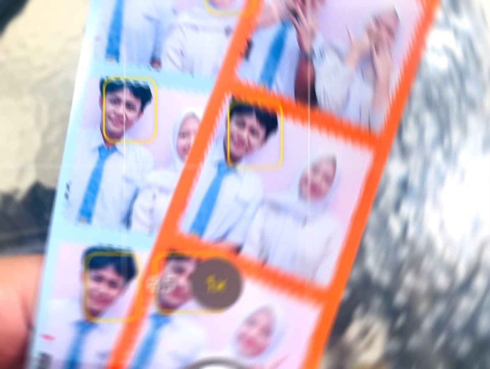
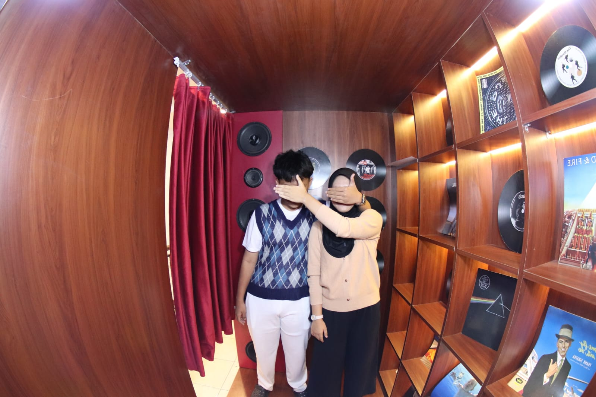
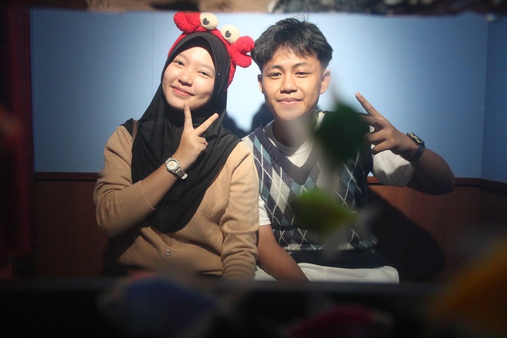

KOLEKSI NO. I
Keteduhan Senyuman
"Dalam setiap senyummu terpatri ketenangan yang senantiasa menepis kelelahan duniawi."
Dengan segenap rasa takzim, ketulusan, dan rasa syukur yang mendalam. Sebuah persembahan istimewa untuk merayakan hari kelahiran seorang pribadi yang senantiasa menebarkan keteduhan, budi pekerti luhur, dan ketenangan bagi siapapun di sekelilingnya.
Setiap potret merangkum momen berharga yang terabadikan dalam kehangatan waktu.
"Dalam setiap senyummu terpatri ketenangan yang senantiasa menepis kelelahan duniawi."

"Waktu seolah melambat di kala kita bertukar cerita, menyisakan kehangatan yang tak lekang."

"Melangkah beriringan dengan penuh hormat dan ketulusan di setiap perjalanan yang dilalui."

"Segala puji dan syukur atas anugerah kehadiranmu yang senantiasa menjadi berkah tak ternilai."
Untaian rasa syukur dan doa yang terangkum dalam warkat resmi kehormatan.
Kepada Yang Terhormat dan Senantiasa Istimewa,
Felisha Oktarina Kustantri
Salam takzim dan puji syukur senantiasa terpanjatkan ke hadirat Tuhan Yang Maha Esa. Pada hari yang mulia dan penuh berkah ini, perkenankan saya menyampaikan ucapan selamat memperingati hari kelahiran Anda.
Bertambahnya usia pada hari ini adalah momentum agung untuk mensyukuri setiap langkah kehidupan, kedewasaan, serta kebijaksanaan yang telah Anda raih. Kehadiran Anda bukan sekadar menghiasi hari-hari, melainkan menjadi anugerah yang senantiasa membawa kedamaian dan keteladanan bagi lingkungan di sekitar Anda.
Dalam suasana yang khidmat ini, doa terbaik saya panjatkan: Semoga Tuhan Yang Maha Pemurah senantiasa melimpahkan kesehatan yang paripurna, ketenangan jiwa, kemudahan dalam setiap urusan, serta keberkahan yang berlimpah di sepanjang perjalanan hidup Anda. Kiranya setiap cita-cita luhur yang Anda semogakan dapat terwujud dengan cara yang paling mulia.
Terima kasih atas budi pekerti yang luhur, ketulusan hati yang tulus, serta senyuman teduh yang senantiasa menguatkan. Selamat memperingati hari kelahiran, Felisha.
Heningkan cipta sejenak, lafalkan satu permohonan paling tulus dalam hati, lalu sentuh nyala lilin untuk mengiringi doa ke hadirat Sang Pencipta.
Setiap doa tulus yang terucap dari hati yang bersih akan selalu didengar oleh Sang Maha Kuasa. Kiranya di usia yang baru ini, Anda senantiasa dianugerahi kesehatan paripurna, kemakmuran, dan kedamaian hidup.
Nilai-nilai luhur dan kebaikan budi pekerti yang senantiasa melekat pada pribadi Felisha.
Kesederhanaan yang dibalut keanggunan alami. Senyum yang tidak hanya menenangkan suasana, melainkan membawa rasa damai bagi setiap insan yang berinteraksi dengan Anda.
Caramu memedulikan sesama dengan penuh keikhlasan tanpa pamrih. Kelembutan tutur kata dan ketulusan empati yang menjadi tauladan bernilai tinggi.
Doa restu agar setiap ikhtiar dan cita-cita luhur Anda senantiasa dimudahkan jalannya. Kiranya tahun ini membuka pintu-pintu keberhasilan yang membawa kebanggaan.
Torehkan untaian doa restu dan ucapan selamat hari kelahiran untuk Felisha Oktarina Kustantri.